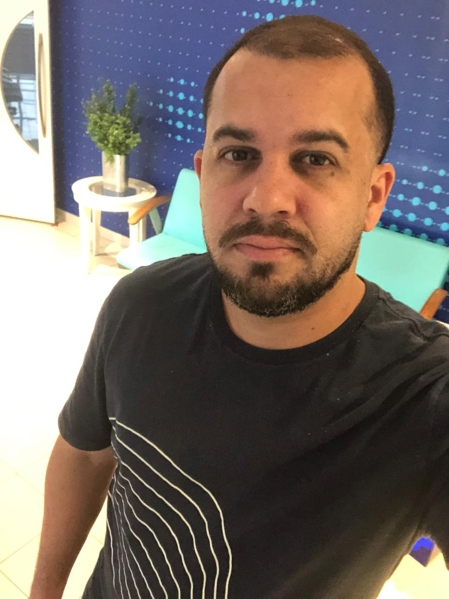

Tecnologia, Inovação e Controle Inteligente
Olá! Sou Bruno Salviano, especialista em Suporte Tecnico IT, Gestão de Ativos e Logística, com mais de 13 anos de experiência em empresas como Bayer, Editora Globo e Rádio Globo. Atualmente curso Análise e Desenvolvimento de Sistemas e Logística e integro minha vivência com tecnologia para criar soluções ágeis, práticas e escaláveis. 🚀
 Github
Github
 LinkedIn
LinkedIn
